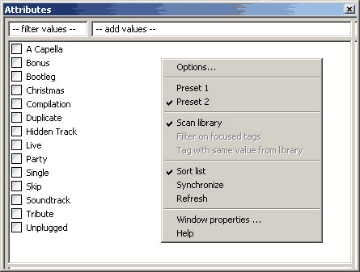
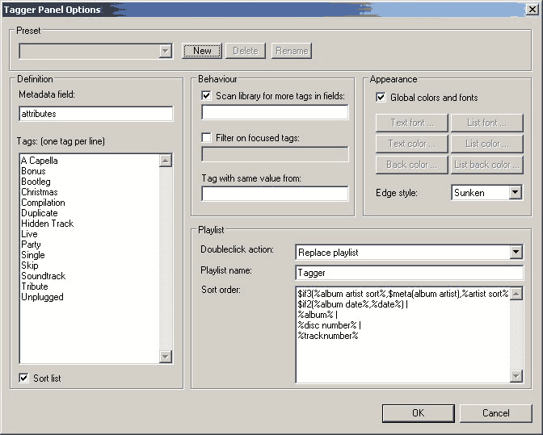
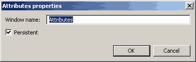

foo_uie_tagger_mod
foo_uie_tagger_mod is a foobar2000 component for quick tagging
defined metadata fields. It can be used as a panel or a free
floating window. The free floating window can be opened by using the
playlist's context menu (Tagging -> Tag in tagger panel ->
Default or "Name").
Window / Panel
The image below shows the free floating window, but the panel looks
the same, just without the titlebar. It contains the elements
described below.

List of values: The list of values contains
the different values for the defined metadata field for the panel.
Three possible states are available for a value: unselected,
selected and indeterminate. The state is determined by the selected
items of the active playlist.
Filter values: This edit box filters the
list of values according to the entered characters. There are two
special filters:
\s: Show only the entries, which are selected or indeterminate
\u: Show only the entries, wich are unselected
Add values: This edit box let you add values
to the list. To add more than one value at a time, separate them
with semicolons, for example: Attribute1;Attribute2. The new values
will be marked as selected. Already existing values will only be
selected.
Context menu: The context menu provides the
following entries:
Options: Opens the options
dialog for customizing the behaviour and appearance of the
panel. Only available, if no changes are pending.
Preset 1, Preset 2, ...: Names of defined
presets for the panel
Scan library: Toggles the scan
library option. Only available, if no changes are pending.
Filter on focused tags: Toggles the filter
on focused tags option. Only available, if no changes are
pending.
Tag with same value from library: Tags the
active selection with the same value from the library determined for
the title format expression defined here.
Only available, if no changes are pending.
Sort list: Toggles the sort
list option. Only available, if no changes are pending.
Synchronize: Synchronizes the list of values
with the library, i.e. all values, which are not in the library will
be removed and all missing values will be added. Only available, if
no changes are pending.
Refresh: Refreshes the panel. Should
normally not be needed. Only available, if no changes are pending.
Window properties: Opens the window
properties dialog. Only available, if no changes are pending
and only for the free floating window.
Help: Opens this page.
Apply: Applies the pending changes to the
files. Pressing ENTER will do the same. Only available, if changes
are pending.
Revert: Reverts the pending changes.
Pressing ESC will do the same. Only available, if changes are
pending.

Presets: Define a preset of options which
can be activated by the conponent's context menu.
New: Create a new preset
Delete: Delete the active preset
Rename: Rename the active preset
Metadata field: Define the metadata field,
which you want to maintain.
Tags: Define the different values, which are
shown in the list for the metadata field.
Sort list
Choose, if the list should be automatically sorted. This option is
also available by the component's context menu.
Scan library for more
tags in fields: Choose, if there should be added
additionally values to the list, which are present in the library
but not in the list. You can specify the fields (separated by
semicolon), which should be used while scanning. For example specify
artist;album artist, if the active metadata
field is artist. If no field is specified,
the active metadata field is used. This option is also available by
the component's context menu.
Filter on
focused tags: Specify the fields on which the list of
values should be filtered based on the active focused item, if any.
Example:
Metadata field: subgenre
Filter on focused tags: genre
Value of the focused item for genre: Jazz
Result: only the subgenres like Vocal Jazz
which belongs to Jazz are displayed in the
list of values, but not for example Thrash Metal
which belongs to Heavy Metal.
More than one filter field can be specified by separating them by
semicolons. If this options is enabled, the scan library option is
always enabled. This option is also available by the component's
context menu, if the filter field contains an entry.
Note: The values in the tags field will be overwritten automatically
by the filtered values.
Tag with same
value from: Define a title format expression, which
lets you tag the active selection with the value from the library
with the most occurrences for this expression. Example:
Metadata field: genre
Tag with the same value from: %artist%
Value for artist (each selected item in the playlist will be
processed separately): Metallica
Genres for Metallica in the library: Heavy Metal
(10 items), Thrash Metal (50 items)
Result: the active selection will be tagged for genre with Thrash Metal.
Global colors and fonts: If checked, the
global ColumnsUI colors and fonts will be used for the panel.
Text font: Choose the font for the status
area, the rating buttons and the action buttons.
List font: Choose the font for the list and
the edit boxes.
Text color: Choose the text color for the
status area, the rating buttons and the action buttons.
List color: Choose the text color for the
list and the edit boxes.
Back color: Choose the background color for
the panel.
List back color: Choose the background color
for the list and the edit boxes.
Edge style: Choose an edge style for the
panel.
Doubleclick action: Define, if the content
of the playlist is replaced or if items are added to the playlist,
when doubleclicking on an item j the list of values. All library
entries with the same value as the doubleclicked one for the current
metadata field will be added to the playlist.
Playlist name: Define a name for the
playlist, which is used, when doubleclicking on an item in the list
of values. If no name is given, the name of the item in the list is
used.
Sort order: Define the sort order for adding
the library entries to the playlist.

Window name: Define the name for the free
floating window. It will be used as the playlist's context menu
entry.
Persistent: If selected, the window will be
made persistent between foobar2000 sessions. Also, the window will
only be hidden by performing a closing action like using ALT+F4 or
pressing the close button.
Advanced options
Enable console output: Enables spamming the
console with statistic information.
Warn before updating of more than N items (0=off):
Specify the maximum number of items to be updated without a warning
dialog. No warning dialog will be shown for the "Tag with same
value" functionality, anyway.